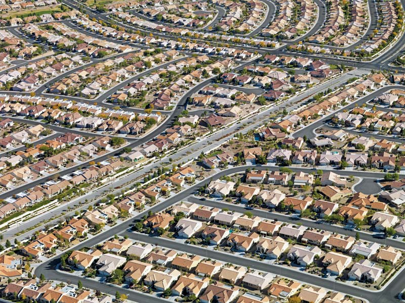
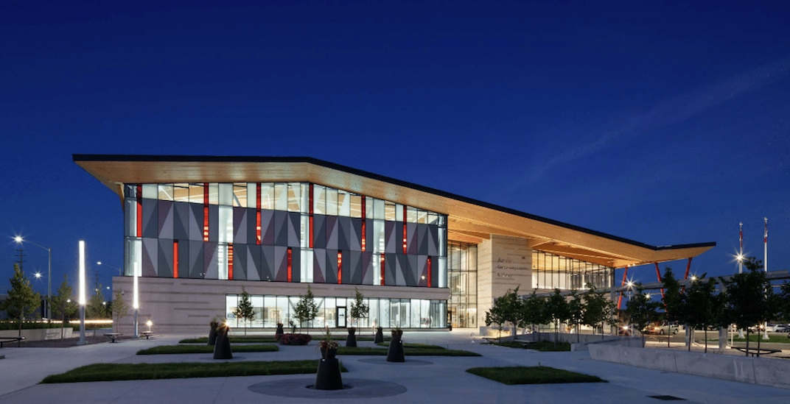
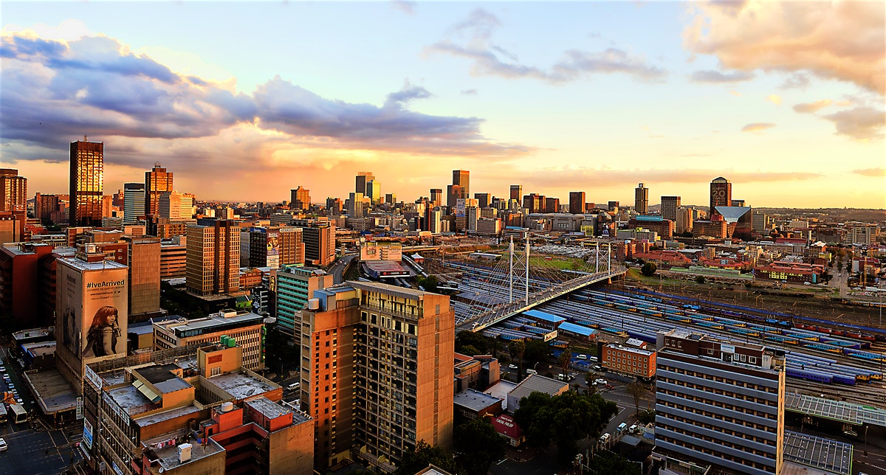

One important aspect of sustainable cities is density, or the number of people living in an unit area. Density reduces the average person's land footprint, enabling more land to be used for parks and public spaces. In crowded cities, there simply isn't enough space for everyone, so density also encourages transit development as the more density there is, the more transit ridership potential you can create. When communities are denser, taking transit makes more sense because denser communities have less highways and parking lots but more metros and LRT lines. Then as transit gets built in the area, TOD (Transit Oriented Development) will happen, and this is a positive cycle that keeps on repeating. Building denser communities makes them more walkable and connected, something that many (especially younger people) value. Walkable communities also help to kill the car centric culture, something that every large city will need to do eventually. They also have a higher quality of life. Everyone likes to be able to walk to work, school, the community center and the grocery store However, we can't allow densification to go on forever as we are seeing at places like Yonge and Eglington. Public resources, infrastructure and services must keep up with the pace of densification, otherwise the communities will quickly fall apart. But when done right, densification is a gamble that pays off.

Urban sprawl is the result of decades of poor planning, rapid growth and high housing prices. Sadly, this has become an all too common sight in our suburban communities. One of the main problems with urban sprawl is that it creates a car centric culture which leads to chronic congestion. For example, roads like the 404 north of Hwy 7 was designed to be a rural highway, but since then the area has been engulfed by urban sprawl. This has led to the highway and radial roads such as Hwy 7 and 16th Ave being very congested compared to places like the downtown core. Because the downtown core is much denser, it supports much more transit, walking, cycling and less driving. With urban sprawl, you don't have the density to support frequent transit, putting the planners in an awkward position. Some people view urban sprawl as gentrification since all the buildings are the same and there's no flair to them. Urban sprawl is also very environmentally destructive: it destroys enormous amounts of animal habitat. Instead of urban sprawl, we should densify existing communities. In other words, build 'up, not out.' In cities with very limited space like Shenzhen or Singapore, this has worked very well. It's no coincidence that these cities have amazing mass transit networks, very little congestion, lots of greenspace and a very high quality of life.
Growth hubs are areas that are experiencing enormous amounts of growth usually in the form of densification. In Toronto, these places include Mimico, Liberty Village, Yonge Eglington and North York Center. Every year, new buildings go up in these areas, and as a result, government services get overwhelmed really fast. A lack of space in local schools, long ER wait times, chronic congestion, subway overcrowding, and a lack of green space are some examples. We can't keep on building forever in those areas - they're already over capacity. What we need to do in encourage uniform growth, or growth that is relatively evenly distributed throughout communities, cities and regions. As we densify more areas, more growth hubs that have similar services and attractions will naturally appear, helping to take the load of existing ones. Its understandable that people want to live closer to attractions, but if infrastructure can't keep up, then the quality of life isn't there. A new service distribution plan is the "services hub" model where all the services such as health clinics, schools and community centers are located in the same building. This model is much more cost effective (since redundant infrastructure e.g. washrooms, parking isn't needed) and it takes up much less space.
In the mid to late 1900's Johannesburg was growing really quickly. A lot of people moved from rural South Africa into the city, and so, it became overpopulated. Something resembling urban sprawl began to creep outwards, causing the city to expand, expand and expand. However, the municipal government recognized that wasn't sustainable. So, they are now planning multiple development hubs which will have high density residential units, services, entertainment and employment. These hubs will act like mini downtowns and will be connected to one another by mass transit. This helps limit urban sprawl and also improves quality of life!
To learn more about what Canada is doing with sustainable development, visit the Government of Canada website.
In Canada, Mississauga is a city that's managed their growth very well. They've built a vibrant downtown, densified, and created a connected transit network. Read more about them on their website
Return to the top of the page
Return to the home page